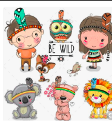
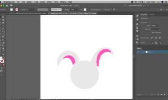
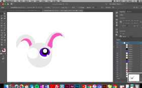

Tema2 Grundlæggende Animation
03.03.04 Animations opgave
Værktøjer brugt
Link til spil
Kan ses her: Link
spil Pitch
Påskeharen har været på spil, og har gemt 10 påskeæg rundt i skoven. Hjælp haren med at indsamle de 10 påskeæg, men vær på vagt, for der popper bomber frem, som giver strafpoint.

Faglige Mål
Formål
Dette var vores første opgave i temaet grundlæggende animation. Vi lærte viforskellige animationsteknikker, både visuelt og teknisk. Her,(Interaktivt spildesign baggrundsdesign, karakterdesign og grafisk spil) samt Javascript til at kode vores animationsspil i. Jeg valgte at bruge programmet adobe illustrater til at designe mine karakter og spilskærme.
Design dokumentation
Moodboard Inspiration
løbet af den første uge fik vi undervisning i karakter-design, Storyboard og scenograf. Vi fik vist en masse video eksempler på både karakter-design og scenografi. Efterfølgende fik vi tid til at reflektere og tegne de karakterer der skulle være med. Jeg gik ud fra nogle af de karaktertræk som vi havde fået vist tidligere i undervisningen som inspiration, da jeg skulle til at designe mine egen karakter. Jeg vidste at jeg ville designe mine figurer i flat design. Så jeg fandt en kunstner som inspirationskilde, til mine designs.(Regina Nikiforova) Jeg skitserede en lille rund figur,(kanin) i en god og ond undgave.
Produktions skitser
 Javascript eksempel